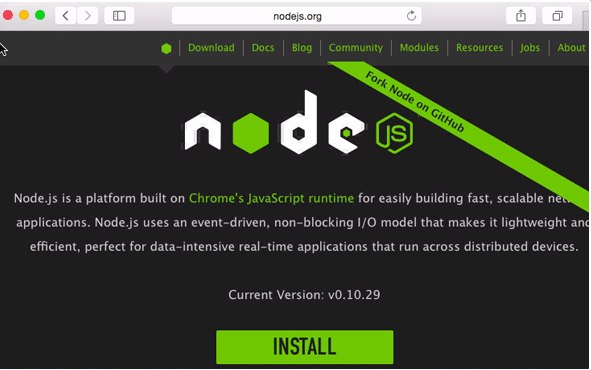
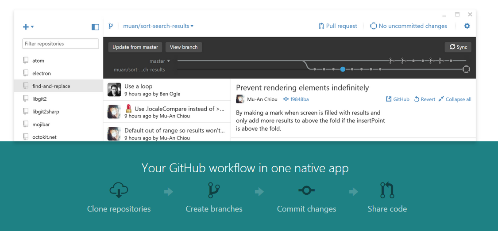
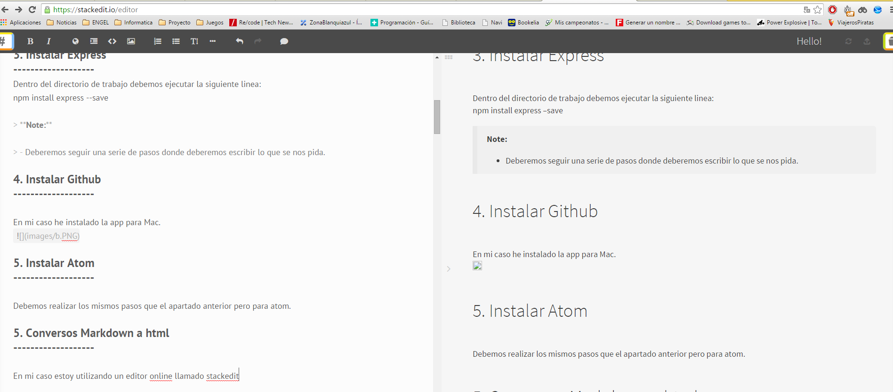

Note:
- Es requisito indispensable tener un correo de la universidad de la laguna
Para ello iremos a la pagina oficial y descaremos el archivo dmg que instalaremos en mi caso en la version Mac Os X.

*npm funciona correctamente.
Dentro del directorio de trabajo debemos ejecutar la siguiente linea:
npm install express –save
Note:
- Deberemos seguir una serie de pasos donde deberemos escribir lo que se nos pida.
En mi caso he instalado la app para Mac.

Debemos realizar los mismos pasos que el apartado anterior pero para atom.
En mi caso estoy utilizando un editor online llamado stackedit
